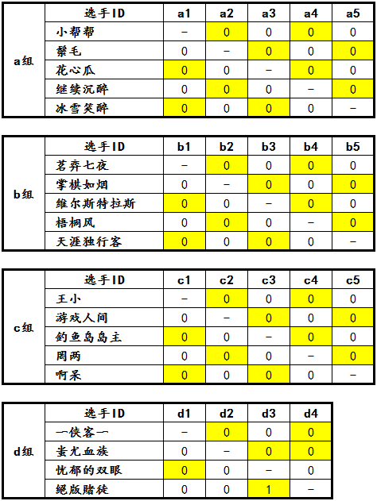

“西北狼”杯第一届博弈规则论坛战预赛正式开始！
#1 “西北狼”杯第一届博弈规则论坛战预赛正式开始！作者：屏蔽 发表时间：2013-7-10 12:34:06
自7月10日零时起，“西北狼”杯第一届博弈规则论坛战预赛开始计时，这也标志着预赛阶段比赛全面展开。
事实上，自7月6日起，就陆续有选手提前开始了比赛对局。除了a组继续沉醉、b组维尔斯特拉斯、c组游戏人间、罔两之外的15位选手已经悉数亮相，与各自的对手展开了激烈的交锋！其中d组四位选手全部出场，战况尤为激烈！绝版赌徒以强横的实力仅用5手力克小组中另一大热门忧郁的双眼，拿下了本次赛事的第一个胜局奖励，又用仅仅8手即逼迫蚩尤血族签订城下之盟，尽显王者霸气！在其他组别的对局中，也有不少精彩的对局以及地毯取胜的结论出现。
在比赛初期，各位选手更加倾向于中心区域黑1开局，以较稳定和成熟的定式进入中盘。但随着赛事的进展，也出现了越来越多不拘一格的开局方式，使得比赛的精彩程度大为增加！
裁判组在此提醒各位选手和围观群众，预赛的正式计时自7月10日零时起算，在此之前进行的对局，无论双方是否都开始对局，均不计入比赛耗时。此外，除了原有的几个功能性主题外，裁判组还按照赛事规程发布了一般性提醒、问答楼，拓宽了选手与裁判组、组委会之间的沟通渠道，方便比赛选手及工作人员互相配合共同顺利完成比赛。
让我们继续关注赛事的发展！裁判组和组委会也将紧密跟进，定期为大家带来第一手的赛事资讯！
［此帖子已被 屏蔽 在 2013-7-10 12:36:23 编辑过］
［ 一侠客一同学于 2013-7-10 12:47:36 时花20金币送鲜花一朵］
［ 一侠客一同学于 2013-7-10 12:47:36 时花20金币送鲜花一朵］
［ 一侠客一同学于 2013-7-10 12:47:36 时花20金币送鲜花一朵］
［ 一侠客一同学于 2013-7-10 12:47:36 时花20金币送鲜花一朵］
［ 一侠客一同学于 2013-7-10 12:47:36 时花20金币送鲜花一朵］
#2 Re:“西北狼”杯第一届博弈规则论坛战预赛正式开始！作者：小帮帮 发表时间：2013-7-10 13:26:51
这么看来，赌徒已经出线了！
#3 Re:“西北狼”杯第一届博弈规则论坛战预赛正式开始！作者：黄药师 发表时间：2013-7-10 13:29:52
赌徒威武。。。。#4 Re:“西北狼”杯第一届博弈规则论坛战预赛正式开始！作者：絕版賭徒 发表时间：2013-7-11 16:56:00
还没出线吧，理论上D组可以有三个2分出现，，，，#5 Re:“西北狼”杯第一届博弈规则论坛战预赛正式开始！作者：火云邪神猪仔 发表时间：2013-7-11 17:01:40
双眼胜侠客 侠客胜赌徒的话 三个人都是两分 胜负死循环。看来要加赛啊。#6 Re:“西北狼”杯第一届博弈规则论坛战预赛正式开始！作者：一侠客一 发表时间：2013-7-11 17:19:10
各位 现实么？。。。#7 Re:“西北狼”杯第一届博弈规则论坛战预赛正式开始！作者：屏蔽 发表时间：2013-7-11 17:37:39
没啥不现实的……一弱三强或一强三弱的话 这种情况并不难出现。#8 Re:“西北狼”杯第一届博弈规则论坛战预赛正式开始！作者：屏蔽 发表时间：2013-7-11 17:44:02
不考虑和棋 如果所有对局的胜负机会都是五五分，那么出现2-2-2-0循环套和1-1-1-3循环套的机会都是1/8
如果已经确定一个很强的选手或一个很弱的选手，这种情况出现的机会更是会提升1倍，达到1/4
怎样都算不上小概率事件了
#9 Re:“西北狼”杯第一届博弈规则论坛战预赛正式开始！作者：火云邪神猪仔 发表时间：2013-7-11 17:50:16
楼上，六楼问的是他战胜赌徒现实吗，只是单纯的实力对比，你扯这么多没用的。